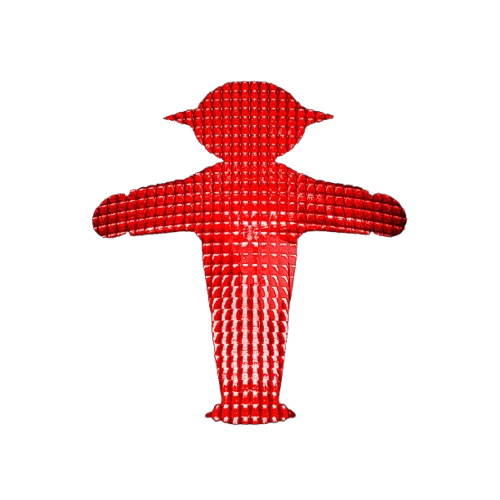
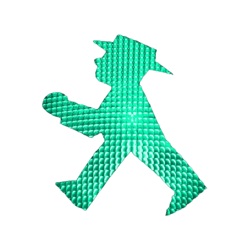

Passeggiando per le strade di Berlino, non potrai non notare questi semafori particolari. Ampelmännchen è il loro nome, che tradotto sta a significare proprio "uomo del semaforo".
Inventato negli anni
'60 dallo psicologo Karl Peglau, è stato progettato proprio per migliorare la sicurezza stradale. La sua figura distintiva infatti, era pensata per essere facilmente riconoscibile, soprattuto per le persone daltoniche.

L'Ampelmännchen era presente sui semafori pedonali di Berlino Est.
Dopo la riunificazione della Germania, l'omino del semaforo è sopravvissuto come simbolo culturale, di identità e di ricordo della repubblica democratica tedesca (DDR).
il suo aspetto buffo e insolito spinge i pedoni a seguire le sue indicazioni.